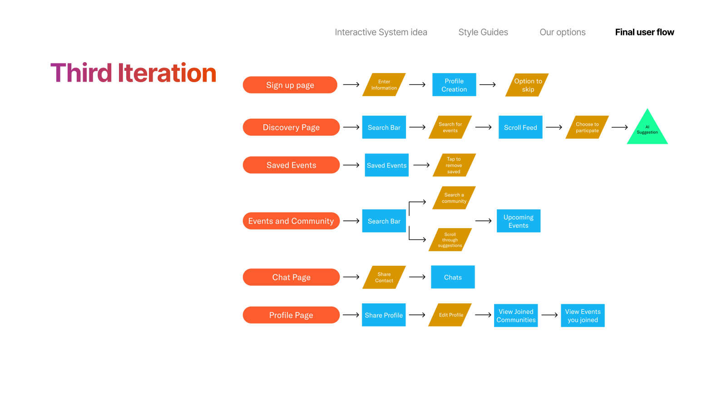
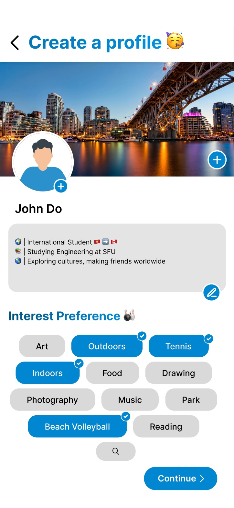
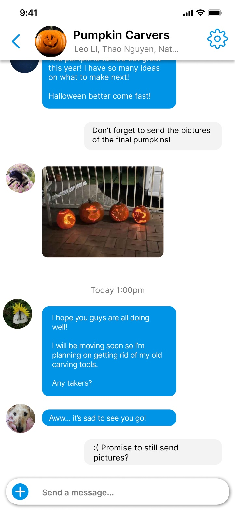
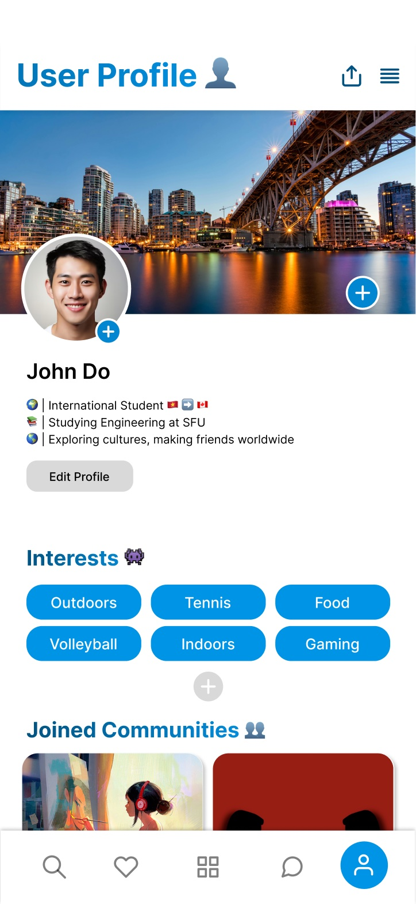

Making a new city feel less new.
Jackalope
An events and communities app for international students in Vancouver, with an AI guide that tells you what to expect before you walk in.

Final design · discovery, saved events, event detail
New country,
no one to go with.
International students land in Vancouver without a network. Events exist, but they’re scattered across platforms and word of mouth, rarely matched to anyone’s interests, and nothing explains the unwritten rules: what to wear, what to bring, how to act.
So students stay home. In one study of international students aged 16 to 40, 96% reported loneliness.
How might we help international students find events and communities that fit them, while easing the culture shock of showing up?
Two students,
three user flows.
We designed for students like Leo, who wants hiking friends but keeps finding events too late, and Thao, too shy to approach classmates and worried about saying the wrong thing. We mapped three user flows before drawing a screen.
Events only
A clean path to events, but no way to find a community or message one person.
Chat locked inside events
Added an AI fallback, but you could only talk to people through a specific event.
Communities stand alone
Communities and one-on-one chat with no event required. The goal was friendships, not attendance.

Third iteration · the flow we built
An app that prepares you,
not just lists events.
Our mascot, a jackalope, is a rabbit and deer in one: a blend of cultures, like the students it’s for. It also runs the app’s AI.
Tips before you go
Tap Jackalope on any event for what to wear, what to bring and the etiquette to know.
The AI is never a dead end
Thumbs-down a tip and you’re offered the organizers, the community chat, or a way to say what went wrong.
Interests do double duty
Picked at sign-up, they rank your feed and show on your profile, so similar students find each other.

Onboarding · interests
Community chat
ProfileWhat testing
changed.
Think-aloud sessions with three new international students at SFU.
One tester found tips they’d never heard before; another liked seeing photos from past events. We ranked three problems by how often and how badly they hurt.
Stuck in chat
Testers got trapped in messages with no clear way back. The fix: a cancel on every step and plain labels.
Tips nobody found
Without indicators, testers didn’t know the tip cards scrolled, so they missed tips.
A retry that didn’t help
After a thumbs-down, the next answer added nothing new. It now routes to people and asks for feedback.